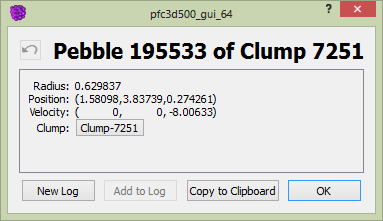

鼠标工具
当 绘图 窗格处于活动状态时，工具栏包含一组用于设置当前鼠标工具的按钮。任何时候都有一个鼠标工具处于活动状态，并可用鼠标左键操作。任何时候，绘图视图都可使用鼠标右键（以及右键加按键）结合活动的鼠标工具进行操作（may be manipulated）（旋转、放大等）。
由于鼠标始终处于五种工具之一，工具栏上总有一个按钮显示为按下状态。下图显示 选择 工具当前处于活动状态。这五种工具是 选择（Select）、查询（Query）、居中（Center）、距离（Distance） 和 平面（Plane）。

选择 工具是默认的鼠标工具，并且是持续有效的。其他鼠标工具在设计上是一次性工具，即当它们完成被选中要执行的功能后，鼠标将恢复到 选择 工具。
鼠标就绪状态与光标
所有鼠标工具都使用特定光标来指示已就绪可执行左键单击操作。如果鼠标在其当前位置单击左键时无法进行有意义的操作——最常见的情况是它指向“空间”而非任何特定的模型或绘图对象——则无论当前选择的是哪种鼠标工具，鼠标光标都会恢复为基础 选择 工具光标（下表中的第一个）。
| 光标图像 | 含义/使用时机 |
|---|---|
| 鼠标要么不在对象上，要么不在当前鼠标工具可作用的对象上（即当鼠标显示为此光标时，左键单击不会有任何效果）。用于所有鼠标工具。 | |
| 鼠标位于可选择中的绘图项上。用于 选择 工具。 | |
 |
鼠标下方的对象是当前选中的绘图项，左键单击可将其拖动到新位置或调整大小。用于 选择 鼠标工具。 |
| 可以查询鼠标下方的对象。用于 查询 鼠标工具。 | |
| 可将鼠标下方的对象指定为视图中心（居中 工具）、作为线性测量的一部分（距离 工具），或作为定义平面的三个点之一（平面 工具）。由 居中、距离 和 平面 工具共同使用。 |
鼠标工具
 选择
选择
当鼠标处于 选择 工具时，在视图中左键单击对象即可将其选中。当使用鼠标选中一个普通绘图项时，控制面板中 绘图项 列表里的关联绘图项会高亮显示以表示选中。
视图中的某些绘图项（例如坐标轴、历程）是交互式的，这意味着选中后可以用鼠标移动和调整其大小。选中这些对象时，它们会显示一个带手柄点的红色轮廓，表示已就绪可移动或调整大小。单击其中一个手柄点并拖动可调整对象大小；在手柄框内任意位置单击并拖动可将对象移动到新位置。图例 也是交互式元素，但不能通过这种方式选中；必须从 控制面板中的 绘图项 列表中选择它。
控制面板中 信息 控件组的第一行还指示鼠标当前位于哪个绘图项上。选中该项后，可以右键单击该项以访问上下文菜单。
警告
要使绘图项可被选中，其透明度属性必须关闭（未勾选）。如果绘图项以任何方式使用了透明度，则无法选中它。
 查询
查询


图 2：鼠标查询得到的对话框结果。单击可放大。
查询 可用于获取模型信息。激活后，在模型中单击某个位置通常会弹出一个对话框，其中包含所单击项的信息（如相邻图像所示）。可能存在单击对象不确定的情况，此时会弹出一个包含一组选项的弹出菜单，用户可以从中选择感兴趣的项。在模型之外的任意位置单击鼠标即可关闭此菜单。从菜单中选择一项将打开一个对话框，其中包含与该选中项相关的模型信息。
记录：对话框中出现的信息可以使用 按钮保存到文本文件中。如果用户之前已启动过日志文件，则还可以使用将当前对话框的信息（）追加到日志文件的附加选项。请注意，保存新日志文件或添加到日志文件也会关闭该对话框。使用 查询、距离 和 平面 鼠标工具创建的信息对话框均可访问该日志文件。
 居中
居中
在 居中 工具下，可以通过在模型上所需位置单击鼠标来重新定义视图中心；如果鼠标位于模型之外时单击，则不会发生任何操作。
距离
距离 将通过弹出对话框报告任意两个单击点之间的距离以及这些点本身在模型中的位置。输出结果可以保存到日志中。后续测量可以添加到该日志，或存储到新日志中。
平面
平面 允许通过在模型内单击三个点来定义平面。单击点的位置以及所得平面的方向将在弹出对话框中报告。输出结果可以保存到日志中。后续平面可以添加到该日志，或存储到新日志中。
| 这些内容对您有帮助吗？… | FLAC3D © 2019, Itasca | 原文更新于 2020 年 10 月 8 日 |